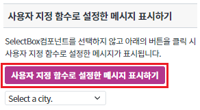

[SelectBox] 사용자가 SelectBox에 입력한 데이터를 검증하기
1개요
사용자가 SelectBox컴포넌트에서 선택한 데이터를 검증하는 것에 관한 예제입니다. 이 기능은 아래의 속성과 함수로 사용할 수 있습니다. - mandatory : (속성)mandatory="true"인 경우, validate(); 함수는 검증을 수행하여 결과를 true/false로 반환 - displaymessage : (속성)검증 실패 시 Engine 내부에 정의된 메시지 표시 - invalidMessage : (속성)검증 결과가 실패일 경우, 속성에 지정한 값을 메시지 표시 - invalidMessageFunc : (속성)검증 결과가 실패일 경우, 사용자 지정 함수 반환 - validate : (함수)컴포넌트의 유효성 관련 속성값을 통해 유효성 검사를 실행
2구현된 기능
선택 여부 판단하기
지정된 메시지 표시하기
사용자 설정 메시지 표시하기
사용자 지정 함수로 설정한 메시지 표시하기
3예제 테스트 방법
3.1선택 여부 판단하기
- STEP1. 버튼을 클릭합니다.
선택 여부 판단하기 버튼을 클릭합니다.
[브라우저(Chrome) 실행 예시]
- STEP2. 실행 결과를 확인합니다.
아래 그림과 같이 메시지 창에 'false' 가 표시되는 것을 확인합니다.
[브라우저(Chrome) 실행 예시]
- STEP3. 버튼을 클릭합니다.
아래 그림과 같이 SelectBox컴포넌트의 목록을 선택 후 선택 여부 판단하기 버튼을 클릭합니다.
[브라우저(Chrome) 실행 예시]
- STEP4. 실행 결과를 확인합니다.
아래 그림과 같이 메시지 창에 'true' 가 표시되는 것을 확인합니다.
[브라우저(Chrome) 실행 예시]

3.2지정된 메시지 표시하기
- STEP1. 버튼을 클릭합니다.
지정된 메시지 표시하기 버튼을 클릭합니다.
[브라우저(Chrome) 실행 예시]
- STEP2. 실행 결과를 확인합니다.
아래 그림과 같이 메시지 창에 '필수 입력 항목입니다' 가 표시되는 것을 확인합니다.
※해당 메시지는 시스템 엔진에서 지정해 놓은 메시지입니다.
[브라우저(Chrome) 실행 예시]
- STEP3. 버튼을 클릭합니다.
아래 그림과 같이 SelectBox컴포넌트의 목록을 선택 후 지정된 메시지 표시하기 버튼을 클릭합니다.
[브라우저(Chrome) 실행 예시]
- STEP4. 실행 결과를 확인합니다.
SelectBox컴포넌트가 선택되어 있으면 메시지가 표시되지 않는 것을 확인합니다.
3.3사용자 설정 메시지 표시하기
- STEP1. 버튼을 클릭합니다.
사용자 설정 메시지 표시하기 버튼을 클릭합니다.
[브라우저(Chrome) 실행 예시]
- STEP2. 실행 결과를 확인합니다.
아래 그림과 같이 메시지 창에 '사용자 설정 메시지' 가 표시되는 것을 확인합니다.
[브라우저(Chrome) 실행 예시]
- STEP3. 버튼을 클릭합니다.
아래 그림과 같이 SelectBox컴포넌트의 목록을 선택 후 사용자 설정 메시지 표시하기 버튼을 클릭합니다.
[브라우저(Chrome) 실행 예시]
- STEP4. 실행 결과를 확인합니다.
SelectBox컴포넌트가 선택되어 있으면 메시지가 표시되지 않는 것을 확인합니다.
3.4사용자 지정 함수로 설정한 메시지 표시하기
- STEP1. 버튼을 클릭합니다.
사용자 지정 함수로 설정한 메시지 표시하기 버튼을 클릭합니다.
[브라우저(Chrome) 실행 예시]

- STEP2. 실행 결과를 확인합니다.
아래 그림과 같이 메시지 창에 'Select your favorit city.' 가 표시되는 것을 확인합니다.
[브라우저(Chrome) 실행 예시]
- STEP3. 버튼을 클릭합니다.
아래 그림과 같이 SelectBox컴포넌트의 목록을 선택 후 사용자 지정 함수로 설정한 메시지 표시하기 버튼을 클릭합니다.
[브라우저(Chrome) 실행 예시]
- STEP4. 실행 결과를 확인합니다.
SelectBox컴포넌트가 선택되어 있으면 메시지가 표시되지 않는 것을 확인합니다.
4구현 예시
4.1선택 여부 판단하기
- STEP1. SelectBox의 함수를 정의합니다.
SelectBox컴포넌트의 검증을 위해 아래의 함수를 사용합니다.
[선택] validate // 컴포넌트의 유효성 관련 속성값을 통해 유효성 검사를 실행
- STEP2. validate를 사용하여 유효성 검사를 실행합니다.
[소스 코드 예시]
/** * 버튼 [ 선택 여부 판단하기 ] 클릭 시 */ scwin.btn_ex1_onclick = function (e) { // SelectBox 'sbx_exam1'의 체크 여부를 검증합니다. let message = sbx_exam1.validate(); alert(message); };
- STEP3. SelectBox의 속성을 지정합니다.
[필수] mandatory="true" //[default:false, true] 필수 선택 적용 여부. validate 함수를 통해 입력값을 검증할 경우 필수 입력을 확인.
그림 1.웹스퀘어5 SP5 스튜디오의 Property View(속성창) 예시
[소스 코드 예시]
<!-- selectBox의 소스 본문 예시 --> <xf:select1 mandatory="true" id="sbx_exam1"> <xf:choices> <xf:item> <xf:label><![CDATA[Seoul]]></xf:label> <xf:value><![CDATA[1]]></xf:value> </xf:item> <xf:item> <xf:label><![CDATA[New York]]></xf:label> <xf:value><![CDATA[2]]></xf:value> </xf:item> <xf:item> <xf:label><![CDATA[Paris]]></xf:label> <xf:value><![CDATA[3]]></xf:value> </xf:item> <xf:item> <xf:label><![CDATA[London]]></xf:label> <xf:value><![CDATA[4]]></xf:value> </xf:item> </xf:choices> </xf:select1>
4.2지정된 메시지 표시하기
- STEP1. SelectBox의 함수를 정의합니다.
SelectBox컴포넌트의 검증을 위해 아래의 함수를 사용합니다.
[선택] validate // 컴포넌트의 유효성 관련 속성값을 통해 유효성 검사를 실행
- STEP2. validate를 사용하여 유효성 검사를 실행합니다.
[소스 코드 예시]
/** * 버튼 [ 지정된 메시지 표시하기 ] 클릭 시 */ scwin.btn_ex2_onclick = function (e) { // SelectBox 'sbx_exam2'의 체크 여부를 검증합니다. sbx_exam2.validate(); };
- STEP3. SelectBox의 속성을 지정합니다.
[필수] mandatory="true" //[default:false, true] 필수 선택 적용 여부. validate 함수를 통해 입력값을 검증할 경우 필수 입력을 확인.
[필수] displaymessage="true" //[default:false, true] 기본적으로 엔진 내부에 정의된 메시지를 표시. 단, invalidMessage 속성이 정의된 경우, 해당 속성으로 정의된 메시지를 표시.
그림 2.웹스퀘어5 SP5 스튜디오의 Property View(속성창) 예시
[소스 코드 예시]
<!-- selectBox의 소스 본문 예시 --> <xf:select1 displaymessage="true" mandatory="true" id="sbx_exam2"> <xf:choices> <xf:item> <xf:label><![CDATA[Seoul]]></xf:label> <xf:value><![CDATA[1]]></xf:value> </xf:item> <xf:item> <xf:label><![CDATA[New York]]></xf:label> <xf:value><![CDATA[2]]></xf:value> </xf:item> <xf:item> <xf:label><![CDATA[Paris]]></xf:label> <xf:value><![CDATA[3]]></xf:value> </xf:item> <xf:item> <xf:label><![CDATA[London]]></xf:label> <xf:value><![CDATA[4]]></xf:value> </xf:item> </xf:choices> </xf:select1>
4.3사용자 설정 메시지 표시하기
- STEP1. SelectBox의 함수를 정의합니다.
SelectBox컴포넌트의 검증을 위해 아래의 함수를 사용합니다.
[선택] validate // 컴포넌트의 유효성 관련 속성값을 통해 유효성 검사를 실행
- STEP2. validate를 사용하여 유효성 검사를 실행합니다.
[소스 코드 예시]
/** * 버튼 [ 사용자 설정 메시지 표시하기 ] 클릭 시 */ scwin.btn_ex3_onclick = function (e) { // SelectBox 'sbx_exam3'의 체크 여부를 검증합니다. sbx_exam3.validate(); };
- STEP3. SelectBox의 속성을 지정합니다.
[필수] mandatory="true" //[default:false, true] 필수 선택 적용 여부. validate 함수를 통해 입력값을 검증할 경우 필수 입력을 확인.
[필수] displaymessage="true" //[default:false, true] 기본적으로 엔진 내부에 정의된 메시지를 표시. 단, invalidMessage 속성이 정의된 경우, 해당 속성으로 정의된 메시지를 표시.
[필수] invalidmessage="yourMessage" //[default:"", "yourMessage"] displaymessage="true "이고 validate(); 검증 결과가 실패인 경우 표시되는 메시지.
그림 3.웹스퀘어5 SP5 스튜디오의 Property View(속성창) 예시
[소스 코드 예시]
<!-- selectBox의 소스 본문 예시 --> <xf:select1 mandatory="true" displaymessage="true" invalidMessage="사용자 설정 메시지" id="sbx_exam3"> <xf:choices> <xf:item> <xf:label><![CDATA[Seoul]]></xf:label> <xf:value><![CDATA[1]]></xf:value> </xf:item> <xf:item> <xf:label><![CDATA[New York]]></xf:label> <xf:value><![CDATA[2]]></xf:value> </xf:item> <xf:item> <xf:label><![CDATA[Paris]]></xf:label> <xf:value><![CDATA[3]]></xf:value> </xf:item> <xf:item> <xf:label><![CDATA[London]]></xf:label> <xf:value><![CDATA[4]]></xf:value> </xf:item> </xf:choices> </xf:select1>
4.4사용자 지정 함수로 설정한 메시지 표시하기
- STEP1. SelectBox의 함수를 정의합니다.
SelectBox컴포넌트의 검증을 위해 아래의 함수를 사용합니다.
[선택] validate // 컴포넌트의 유효성 관련 속성값을 통해 유효성 검사를 실행.
[선택] scwin.fn_msg // 사용자 정의 함수.
- STEP2. validate를 사용하여 유효성 검사를 실행하고 사용자 정의 함수를 통해 메시지의 내용을 설정할 수 있습니다.
[소스 코드 예시]
/** * 버튼 [ 사용자 지정 함수로 설정한 메시지 표시하기 ] 클릭 시 */ scwin.btn_ex4_onclick = function (e) { sbx_exam4.validate(); }; /** * 영역 [ 사용자 지정 함수로 설정한 메시지 표시하기 ]의 * SelectBox컴포넌트 [sbx_exam4]의 invalidMessageFunc함수 */ scwin.fn_msg = function () { let invalidType = this.getType(); // invalid type switch (invalidType) { case "mandatory": msg = "Select your favorit city."; break; default: msg = "Enter again."; break; } alert(msg); }
- STEP3. SelectBox의 속성을 지정합니다.
[필수] mandatory="true" //[default:false, true] 필수 선택 적용 여부. validate 함수를 통해 입력값을 검증할 경우 필수 입력을 확인.
[필수] displaymessage="true" //[default:false, true] 기본적으로 엔진 내부에 정의된 메시지를 표시. 단, invalidMessage 속성이 정의된 경우, 해당 속성으로 정의된 메시지를 표시.
[필수] invalidMessageFunc="yourFunc" //[default:"", "yourFunc"] validate(); 검증 결과가 실패일 경우, 결과 메시지를 동적으로 표시할 사용자 정의 함수 이름.
그림 4.웹스퀘어5 SP5 스튜디오의 Property View(속성창) 예시
[소스 코드 예시]
/** * 버튼 [ 사용자 지정 함수로 설정한 메시지 표시하기 ] 클릭 시 */ <xf:select1 mandatory="true" displaymessage="true" invalidMessageFunc="scwin.fn_msg" id="sbx_exam4"> <xf:choices> <xf:item> <xf:label><![CDATA[Seoul]]></xf:label> <xf:value><![CDATA[1]]></xf:value> </xf:item> <xf:item> <xf:label><![CDATA[New York]]></xf:label> <xf:value><![CDATA[2]]></xf:value> </xf:item> <xf:item> <xf:label><![CDATA[Paris]]></xf:label> <xf:value><![CDATA[3]]></xf:value> </xf:item> <xf:item> <xf:label><![CDATA[London]]></xf:label> <xf:value><![CDATA[4]]></xf:value> </xf:item> </xf:choices> </xf:select1>
5주요 API
valueNotInList
emptyItem
setValue
getSelectedIndex
6참고 문서
[웹스퀘어5 SP5 개발 가이드] SelectBox
링크 : https://docs1.inswave.com/sp5_user_guide/8df43d1f59fab704#641326163f434b17
[웹스퀘어5 SP5 개발 가이드] SelectBox 입력 검증 및 실패 메시지 표시
링크 : https://docs1.inswave.com/sp5_user_guide/8df43d1f59fab704#d55229d495cb6bfa
7참고 동영상
SelectBox 입력 검증 및 실패 메시지 표시